Jonas Margraf makes sound and art with computers.
I’m currently a graduate student in the Audio Communication Group at Technical University Berlin, where I also work at the Electronic Studio. Sparked by some work I did during an internship at IRCAM in the fall of 2017, I’ve written a master’s thesis that deals with machine learning and music information retrieval (Self-Organizing Maps for Sound Corpus Organization , find it here).
I’ve performed and shown work at Zentrum für Kunst und Medien (ZKM) Karlsruhe, MIT Media Lab, Institute of Contemporary Art Boston, Museum of Human Achievement Austin, Hraničář Cultural Center Ústí nad Labem (Czech Republic), Sonic Ground Festival Munich and Superbooth Berlin.
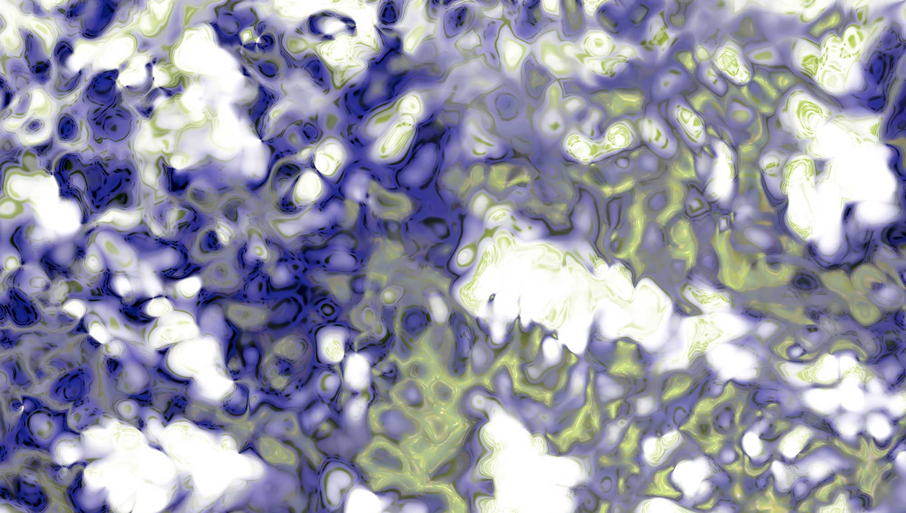
All work shown here has been created using custom software built in JavaScript, TouchDesigner, Max and Processing.
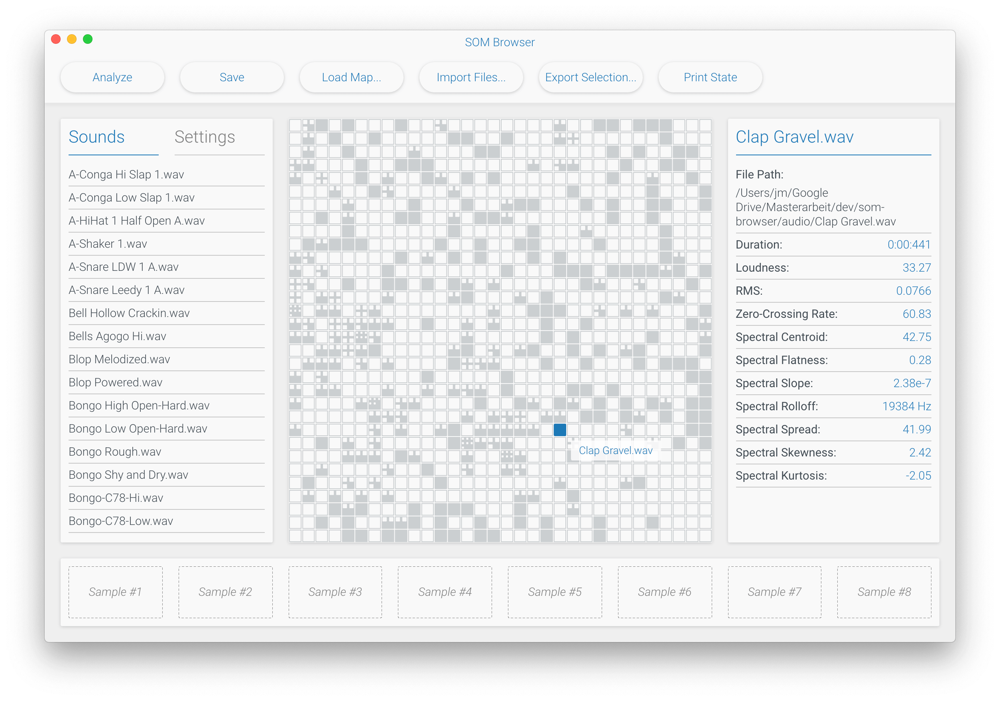
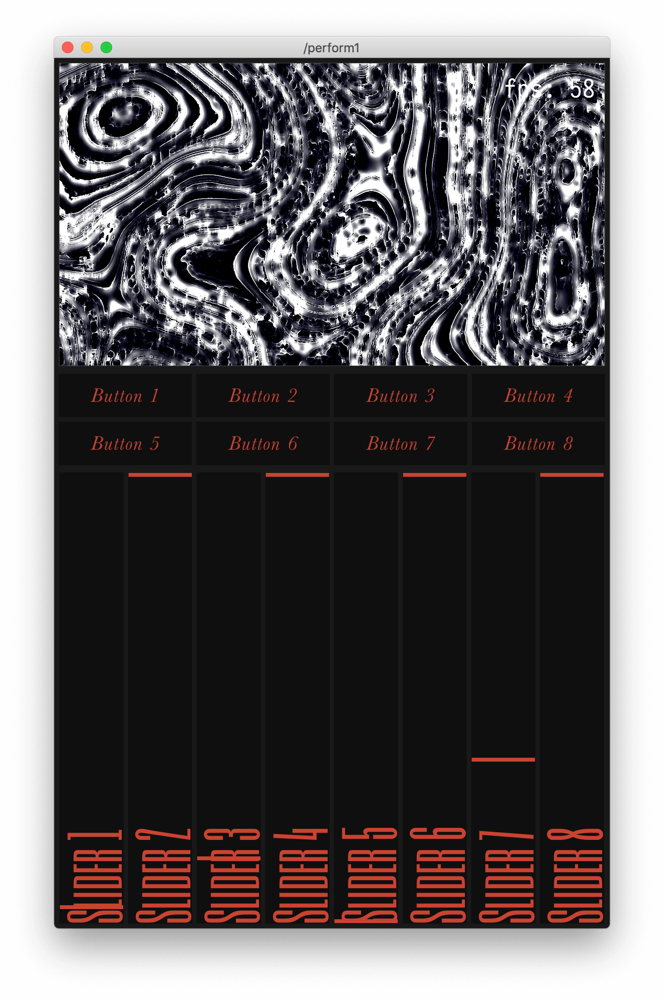
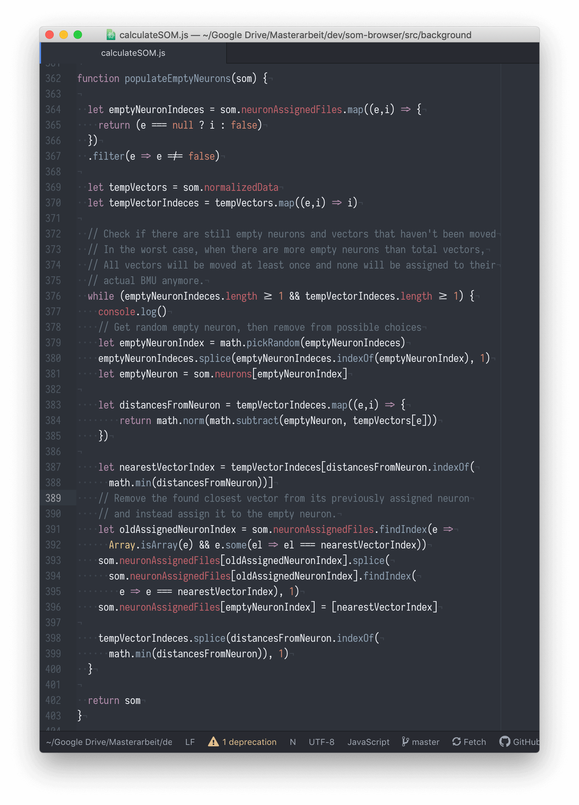
 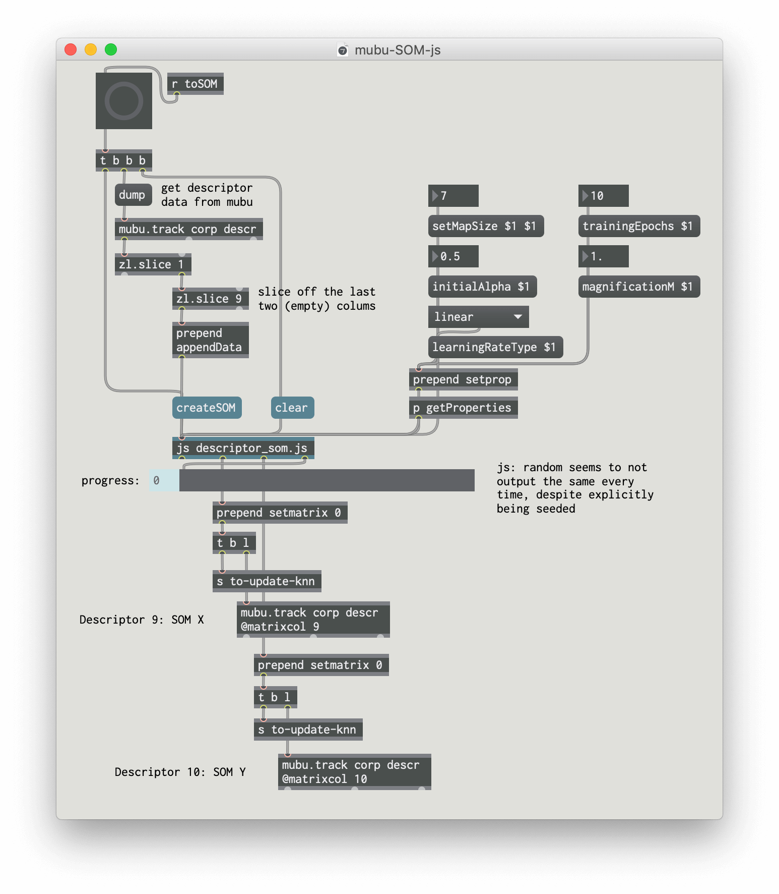
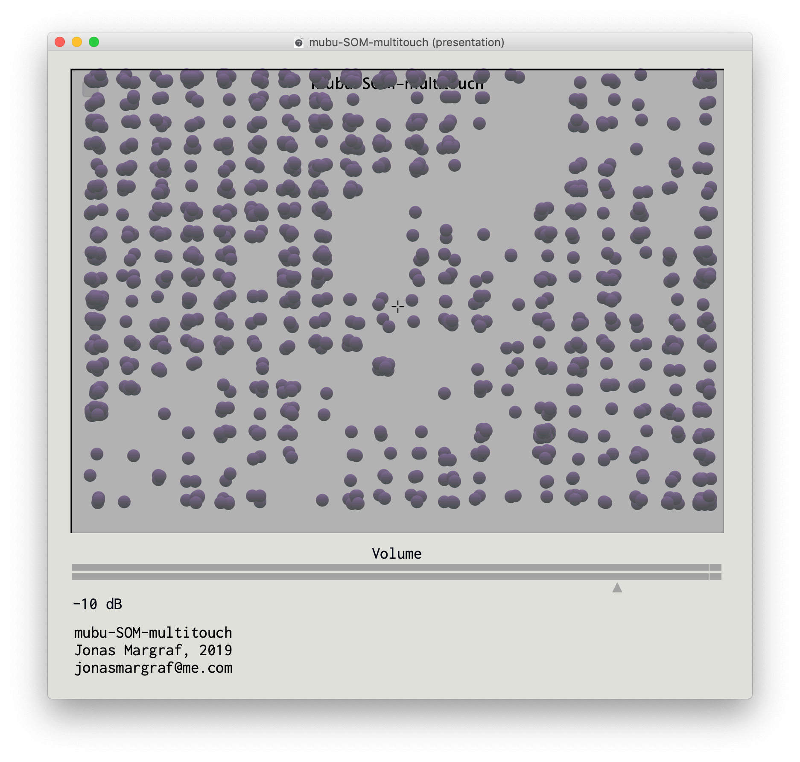
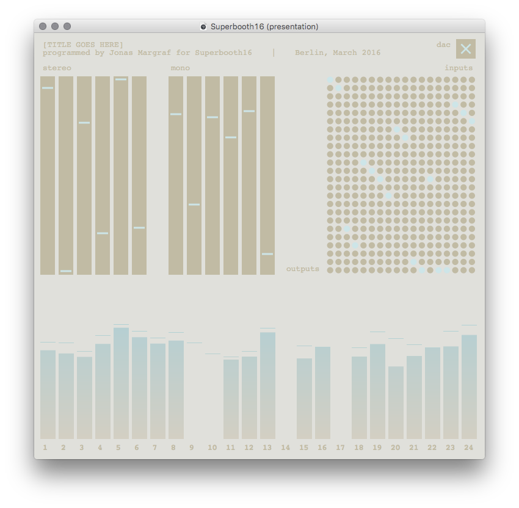
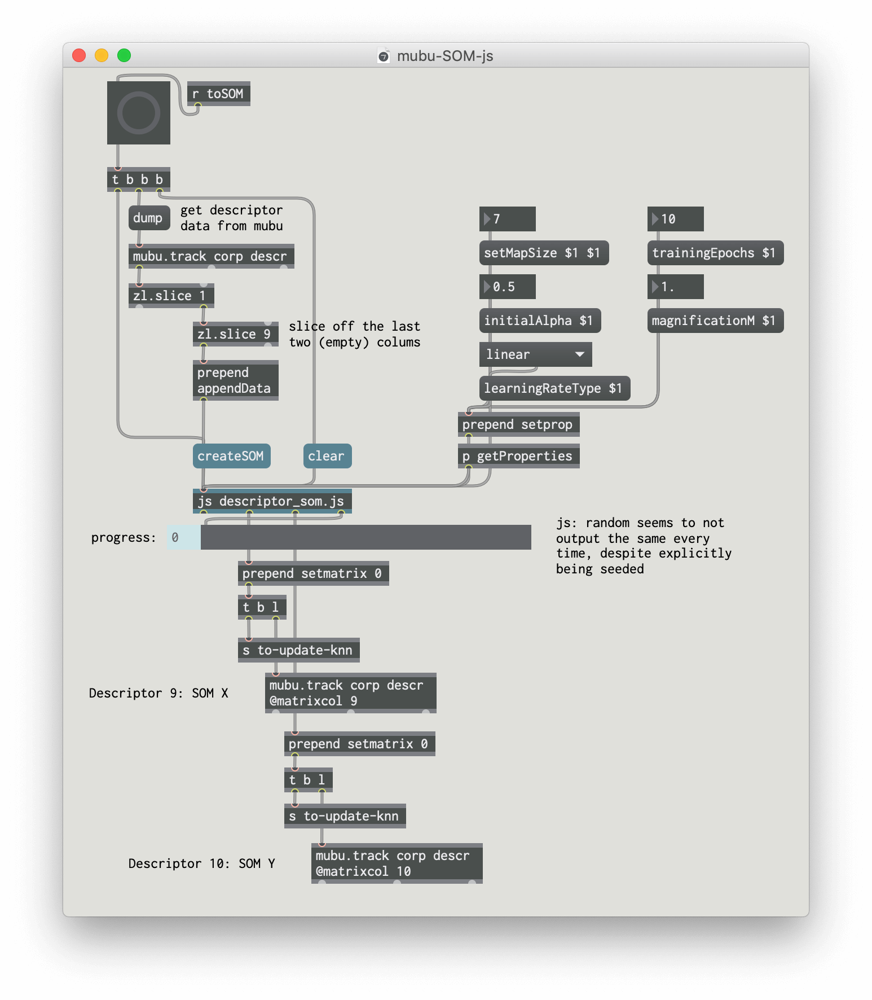
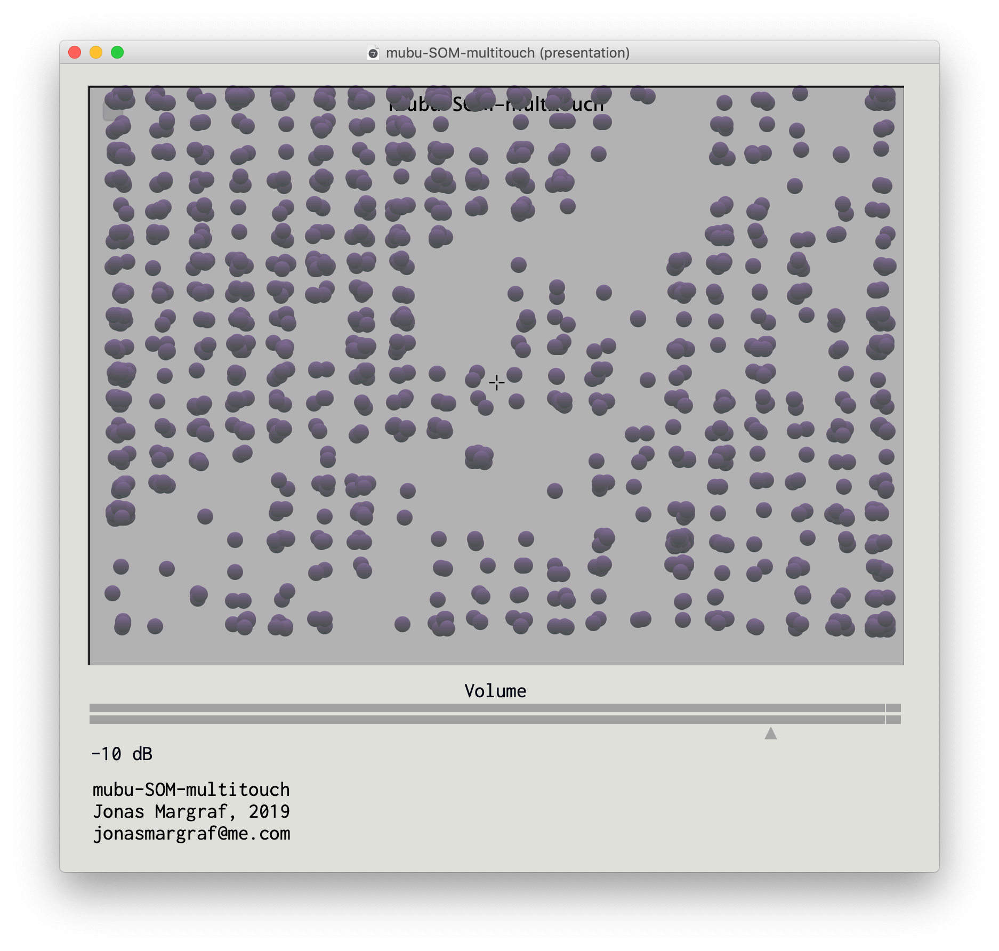
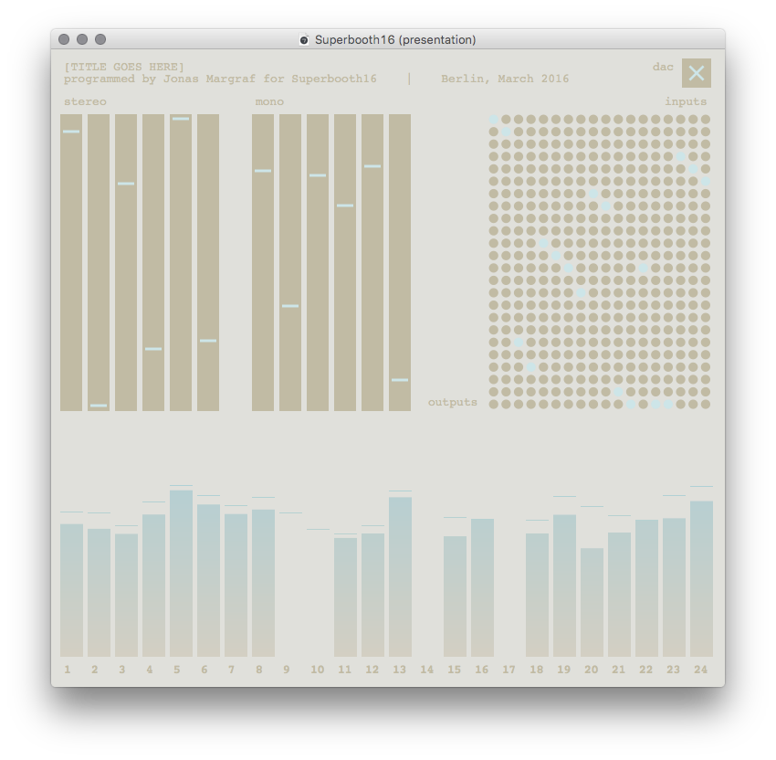
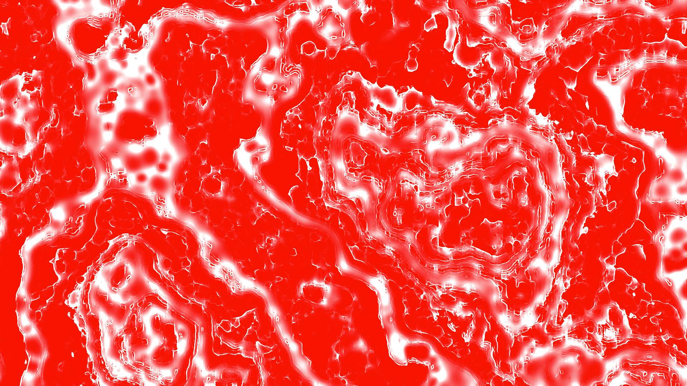
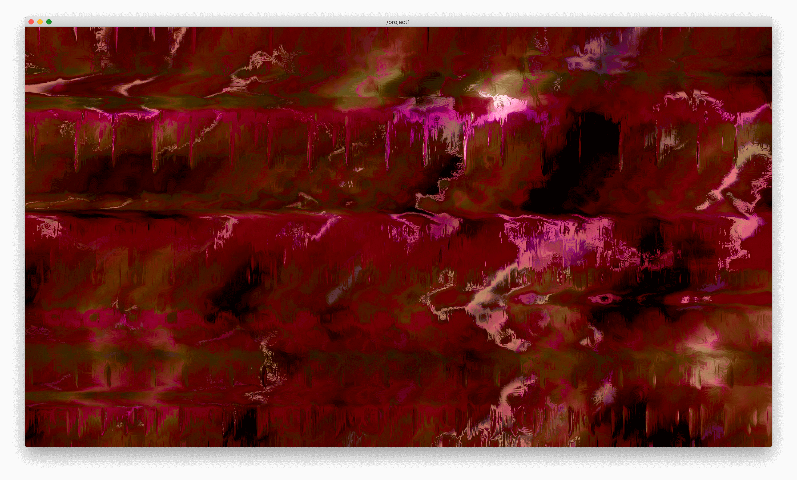
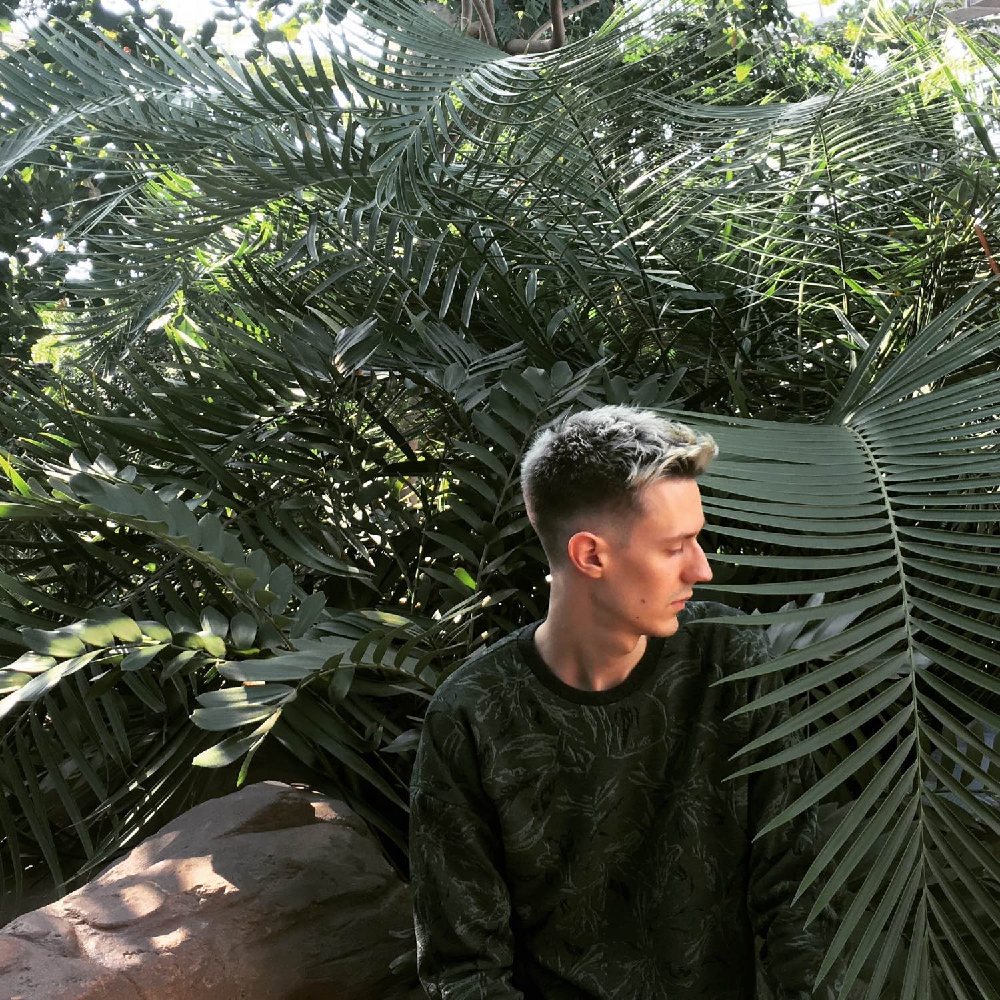
My full resume is available here.
Find more of my work on GitHub and Instagram.
Get in touch: jonasmargraf@me.com.
Find more of my work on GitHub and Instagram.
Get in touch: jonasmargraf@me.com.